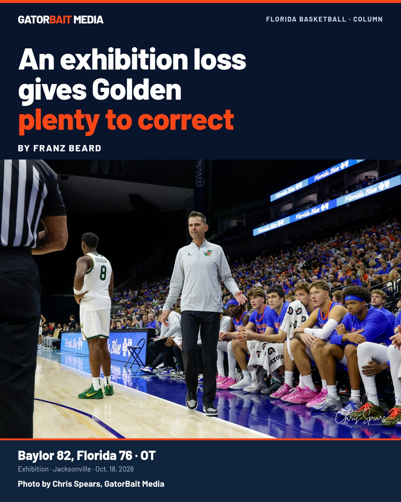
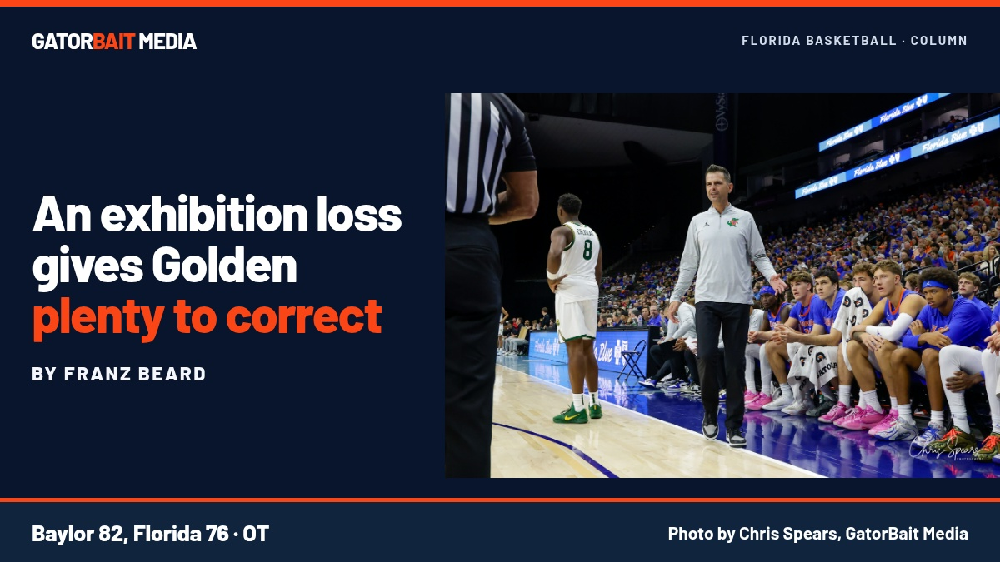

PRIVATE · READY PENDING STORY QC · NOT PUBLISHED
An exhibition loss gives Golden plenty to correct
Column by Franz Beard. Photograph by Chris Spears, GatorBait Media.
1080 × 1350


1200 × 675


Caption draft
An exhibition loss gives Golden plenty to correct. Franz Beard on Florida's 82-76 overtime exhibition loss to Baylor and the work ahead for Todd Golden's Gators. Photo by Chris Spears, GatorBait Media.
Planned canonical / first comment after story QC:
https://www.gatorbaitmedia.com/post/an-exhibition-loss-gives-golden-plenty-to-correct
Both designs preserve the complete original photograph and its signature. All typography and credit sit outside the photograph. This private packet has not been uploaded, scheduled or sent.